Theo quy định tại Điều 60 Thông tư 39, các tổ chức, cá nhân định kỳ thực hiện báo cáo quyết toán tình hình sử dụng nguyên liệu, vật tư nhập khẩu, hàng hóa xuất khẩu với cơ quan hải quan theo năm tài chính.
Tổ chức, cá nhân nộp báo cáo quyết toán chậm nhất là ngày thứ 90 kể từ ngày kết thúc năm tài chính hoặc trước khi thực hiện việc hợp nhất, sáp nhập, chia tách, giải thể, chuyển nơi làm thủ tục nhập khẩu nguyên liệu, vật tư cho Chi cục Hải quan nơi đã thông báo cơ sở sản xuất. Sau đây là tổng quát quy trình tổng khai báo:
- Bước 1: DN tổng hợp số liệu để báo cáo quyết toán từ các bộ phận nội bộ của DN như bộ phận kế toán, kho, sản xuất và xnk
- Bước 2: Cập nhật dữ liệu các chỉ tiêu thông tin trên BCQT theo quy định tại mẫu số 15, 15a tương ứng dành cho nguyên liệu, vật tư và thành phẩm của loại hình gia công, sxxk
- Bước 3: Thực hiện khai báo BCQT đến cơ quan Hải quan quản lý và nhận kết quả phê duyệt trả về.
Để khai BCQT thì doanh nghiệp phải thực hiện đăng ký danh mục tương ứng được khai báo trên tờ khai hải quan lên hệ thống, bao gồm NPL và SP. Danh mục này được khai báo trên tờ khai Hải quan.
Trường hợp quản trị sản xuất của tổ chức, sử dụng mã nguyên liệu, vật tư, mã sản phẩm khác với mã đã khai báo trên tờ khai hải quan khi nhập khẩu nguyên liệu, vật tư, xuất khẩu sản phẩm, tổ chức, cá nhân phải xây dựng, lưu giữ bảng quy đổi tương đương giữa các mã này và xuất trình khi cơ quan hải quan kiểm tra hoặc có yêu cầu giải trình;
Đối với gia công BCQT theo HĐGC, trong 1 bản khai DN có thể chọn nhiều HĐGC để khai báo.
Sau đây là hướng dẫn chi tiết cách lập và nộp báo cáo quyết toán sử dụng phần mềm ECUS5VNACCS của công ty Thái Sơn.
1. Báo cáo quyết toán sản xuất xuất khẩu
Từ menu “Sổ quyết toán / Khai báo quyết toán TT39” bạn chọn vào mục “Khai báo quyết toán nguyên vật liệu, sản phẩm”:
Màn hình chức năng lập và nộp báo cáo quyết toán hiện ra như sau:
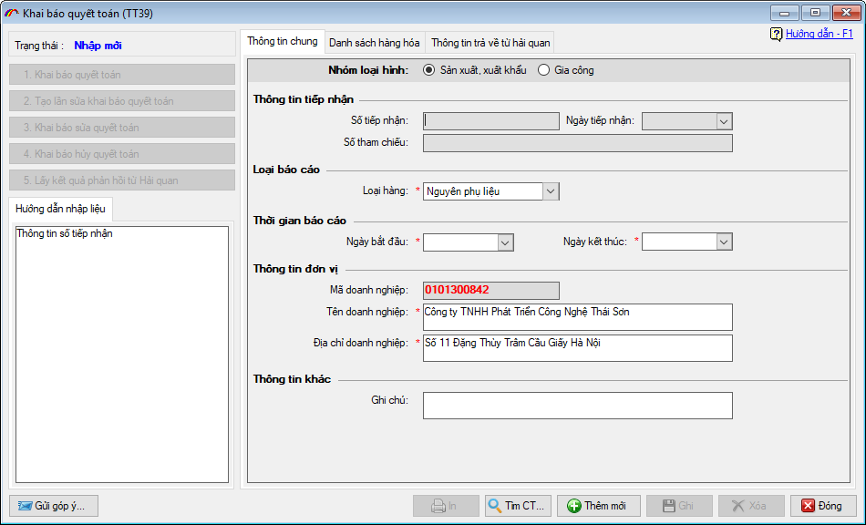
a. Nhập liệu bảng báo cáo quyết toán
a.1. Nhập thông tin chung
Nhóm loại hình: Bạn chọn nhóm loại hình là sản xuất xuất khẩu
Loại báo cáo: Mỗi loại hình được tách thành 2 báo cáo quyết toán cho nguyên vật liệu và sản phẩm. Ở đây sẽ hướng dẫn lập và nộp báo cáo cho nguyên vật liệu, đối với sản phẩm bạn thực hiện tượng tự.
Thời gian báo cáo: Doanh nghiệp nhập vào khoảng thời gian năm tài chính của đơn vị
a.2. Nhập danh sách hàng hóa
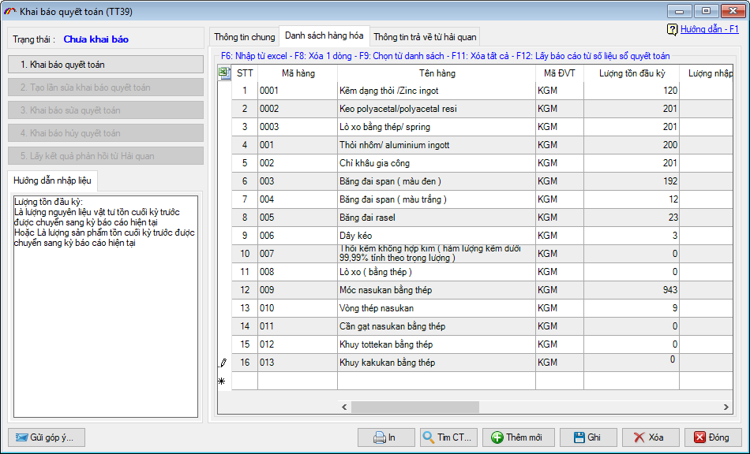
Mã hàng: Là mã do doanh nghiệp tự đặt và quản lý, bạn nhấn vào combo sổ xuống để chọn, đây là các mã hàng đã khai báo danh mục và gửi lên hải quan trên các tờ khai nhập xuất. Bạn có thể chọn nhiều mã bằng cách nhấn phím F9.
Tên hàng, mã đơn vị tính: Được phần mềm tự động lấy vào sau khi bạn chọn mã hàng tương ứng.
Lượng tồn đầu kỳ: Nhập vào tổng số lượng tồn của kỳ báo cáo trước nếu có. Doanh nghiệp có thể xem chi tiết tại phần hướng dẫn nhập liệu đối với từng chỉ tiêu.
Lượng nhập trong kỳ: Nhập vào tổng số lượng đã nhập theo tờ khai trong quãng thời gian năm tài chính đang quyết toán.
Lượng tái xuất: Nhập vào tổng lượng đã tái xuất của mã hàng này nếu có, đối với BCQT sản phẩm sẽ không có lượng tái xuất.
Lượng chuyển mục đích sử dụng: Nhập vào tổng lượng đã chuyển mục đích sử dụng của mã hàng này nếu có.
Lượng xuất kho: Nhập vào tổng số lượng nguyên liệu-vật tư đã xuất kho để đưa vào sản xuất sản phẩm
Lượng xuất khác: Nhập vào tổng số lượng xuất khác của mã hàng nếu có.
Lượng tồn cuối: Được phần mềm tự động tính dựa vào các lượng đã nhập trước đó, dựa theo công thức sau: Tồn cuối = (Tồn đầu kỳ + Lượng nhập) – (Lượng tái xuất + Chuyển mục đích sử dụng + Lượng xuất khẩu + Xuất khác)
Doanh nghiệp cũng có thể nhập nhanh danh sách hàng hóa vào báo cáo theo 2 cách sau:
Cách 1: Nếu đã có dữ liệu danh sách hàng hóa trên file excel, doanh nghiệp sử dụng chức năng import excel của phần mềm bằng cách nhấn phím F6 trên bàn phím, sau đó chọn tới file excel đang chứa dữ liệu, thiết lập các thông số tương ứng và nhấn vào Ghi để phần mềm tự động đưa vào.
Cách 2: Nếu doanh nghiệp sử dụng module Kế toán kho được cung cấp sẵn trên phần mềm để quản lý nhập-xuất-tồn kho theo chế độ kế toán kho, doanh nghiệp nhấn phím F12. Tại cửa số mới hiện ra, bạn chọn thời gian báo cáo, chọn mã KHO rồi nhấn nút CHỌN để phần mềm tự động lấy dữ liệu.
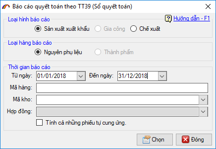
b. Khai báo lên cơ quan Hải quan
Sau khi nhập xong thông tin cho báo cáo quyết toán, doanh nghiệp tiến hành khai báo bằng cách nhấn vào “Khai báo quyết toán” ở menu bên trái cửa sổ chức năng:
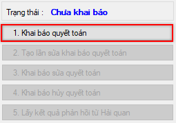
Chọn chữ ký số trong danh sách (lưu ý lúc này chữ ký số phải được cắm vào máy tính)
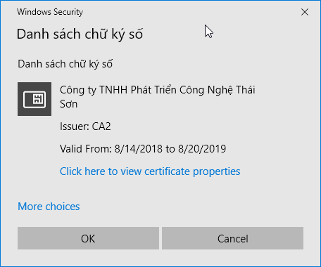
Nhập mã PIN cho thiết bị chữ ký số vừa chọn:
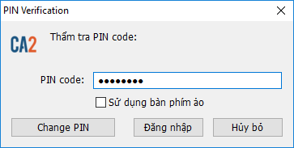
Gửi thành công phần mềm sẽ thông báo như sau:
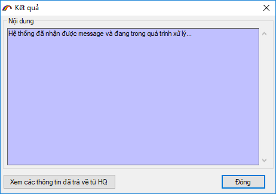
Doanh nghiệp tiếp tục lấy phản hồi cho đến khi nhận được số tiếp nhận trả về từ cơ quan Hải quan, đem hồ sơ báo cáo lên để cơ quan Hải quan duyệt. Nếu được đồng ý và duyệt chấp nhận, doanh nghiệp tiến hành lấy phản hồi để nhận được kết quả chấp nhận lần khai báo cáo quyết toán, kết thúc quá trình khai báo cáo quyết toán nguyên phụ liệu.
2. Báo cáo quyết toán loại hình gia công
Từ menu “Sổ quyết toán / Khai báo quyết toán TT39” bạn chọn vào mục “Khai báo quyết toán nguyên vật liệu, sản phẩm”:
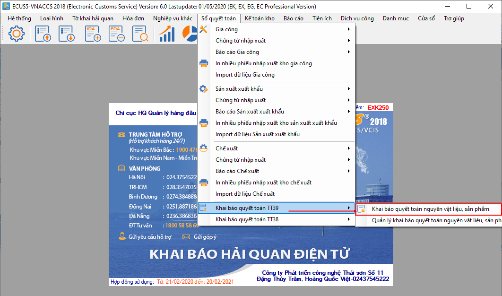
Màn hình chức năng lập và nộp báo cáo quyết toán hiện ra như sau:
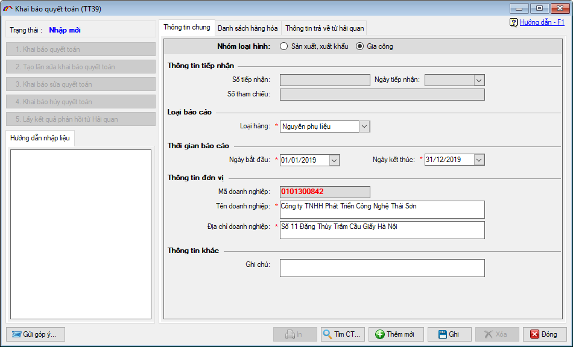
a. Nhập liệu bảng báo cáo quyết toán
a.1. Nhập thông tin chung
Nhóm loại hình: Bạn chọn nhóm loại hình là Gia công
Loại báo cáo: Mỗi loại hình được tách thành 2 báo cáo quyết toán cho nguyên vật liệu và sản phẩm. Ở đây sẽ hướng dẫn lập và nộp báo cáo cho nguyên vật liệu, đối với sản phẩm bạn thực hiện tượng tự.
Thời gian báo cáo: Doanh nghiệp nhập vào khoảng thời gian năm tài chính của đơn vị
a.2. Nhập danh sách hàng hóa
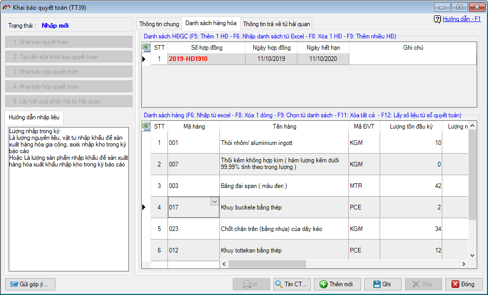
Đầu tiên là chọn HĐGC cần khai báo quyết toán bằng cách nhấn phím F5 tại mục “Danh sách hợp đồng gia công”. Bạn có thể chọn nhiều HĐGC vào 1 lần khai báo quyết toán.
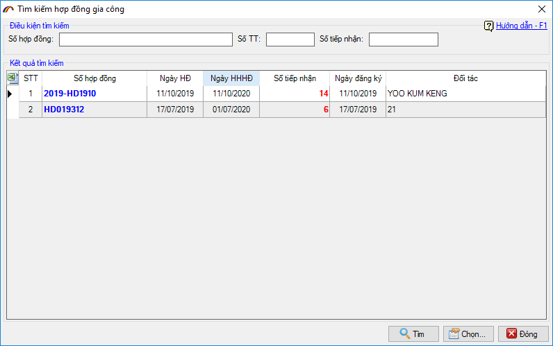
Tiếp đến bạn nhập danh sách hàng hóa cho từng hợp đồng, nhấn chọn vào hợp đồng cần nhập sau đó tiến hành nhập danh sách hàng:
Mã hàng: Là mã do doanh nghiệp tự đặt và quản lý, bạn nhấn vào combo sổ xuống để chọn, đây là các mã hàng đã khai báo danh mục và gửi lên hải quan trên các tờ khai nhập xuất. Bạn có thể chọn nhiều mã bằng cách nhấn phím F9.
Tên hàng, mã đơn vị tính: Được phần mềm tự động lấy vào sau khi bạn chọn mã hàng tương ứng.
Lượng tồn đầu kỳ: Nhập vào tổng số lượng tồn của kỳ báo cáo trước nếu có. Doanh nghiệp có thể xem chi tiết tại phần hướng dẫn nhập liệu đối với từng chỉ tiêu.
Lượng nhập trong kỳ: Nhập vào tổng số lượng đã nhập theo tờ khai trong quãng thời gian năm tài chính đang quyết toán.
Lượng tái xuất: Nhập vào tổng lượng đã tái xuất của mã hàng này nếu có, đối với BCQT sản phẩm sẽ không có lượng tái xuất.
Lượng chuyển mục đích sử dụng: Nhập vào tổng lượng đã chuyển mục đích sử dụng của mã hàng này nếu có.
Lượng xuất kho: Nhập vào tổng số lượng nguyên liệu-vật tư đã xuất kho để đưa vào sản xuất sản phẩm
Lượng xuất khác: Nhập vào tổng số lượng xuất khác của mã hàng nếu có.
Lượng tồn cuối: Được phần mềm tự động tính dựa vào các lượng đã nhập trước đó, dựa theo công thức sau: Tồn cuối = (Tồn đầu kỳ + Lượng nhập) – (Lượng tái xuất + Chuyển mục đích sử dụng + Lượng xuất khẩu + Xuất khác)
Doanh nghiệp cũng có thể nhập nhanh danh sách hàng hóa vào báo cáo theo 2 cách sau:
Cách 1: Nếu đã có dữ liệu danh sách hàng hóa trên file excel, doanh nghiệp sử dụng chức năng import excel của phần mềm bằng cách nhấn phím F6 trên bàn phím, sau đó chọn tới file excel đang chứa dữ liệu, thiết lập các thông số tương ứng và nhấn vào Ghi để phần mềm tự động đưa vào.
Cách 2: Nếu doanh nghiệp sử dụng module Kế toán kho được cung cấp sẵn trên phần mềm để quản lý nhập-xuất-tồn kho theo chế độ kế toán kho, doanh nghiệp nhấn phím F12. Tại cửa số mới hiện ra, bạn chọn thời gian báo cáo, chọn mã KHO rồi nhấn nút CHỌN để phần mềm tự động lấy dữ liệu.
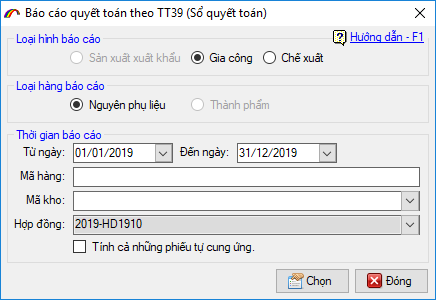
b. Khai báo lên cơ quan Hải quan
Sau khi nhập xong thông tin cho báo cáo quyết toán, doanh nghiệp tiến hành khai báo bằng cách nhấn vào “Khai báo quyết toán” ở menu bên trái cửa sổ chức năng:
Chọn chữ ký số trong danh sách (lưu ý lúc này chữ ký số phải được cắm vào máy tính)
Nhập mã PIN cho thiết bị chữ ký số vừa chọn:
Gửi thành công phần mềm sẽ thông báo như sau:
Doanh nghiệp tiếp tục lấy phản hồi cho đến khi nhận được số tiếp nhận trả về từ cơ quan Hải quan, đem hồ sơ báo cáo lên để cơ quan Hải quan duyệt. Nếu được đồng ý và duyệt chấp nhận, doanh nghiệp tiến hành lấy phản hồi để nhận được kết quả chấp nhận lần khai báo cáo quyết toán, kết thúc quá trình khai báo cáo quyết toán nguyên phụ liệu.